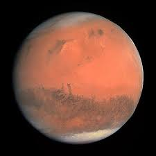
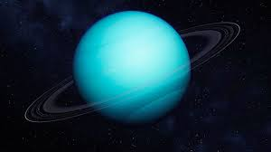

بنية المجموعة الشمسية
الشمس (رمزها: ☉) هي النجم المركزي للمجموعة الشمسية. وهي تقريباً كروية وتحوي بلازما حارة متشابكة مع الحقل المغناطيسي. يبلغ قطرها حوالي 1,392,684 كيلومتر، وهو ما يعادل 109 أضعاف قطر الأرض، وكتلتها 2×10^30 كيلوغرام وهو ما يعادل 330,000 ضعف كتلة الأرض وهو ما يشكل نسبة 99.86 % من كتلة المجموعة الشمسية.

عُطَارِد (رمزه: ☿) هو أصغر كواكب المجموعة الشمسية وأقربها إلى الشمس. أطلقت العرب على هذا الكوكب تسمية «عطارد»؛ وأصل الاسم من المصدر ط ر د، طارد ومطّرَد أي المتتابع في سيره، وأيضاً سريع الجري ومن هنا اسم الكوكب عطارد الذي يرمز إلى السرعة الكبيرة لدوران الكوكب حول الشمس.

الزُّهَرَة (رمزه: ♀) هو ثاني كواكب المجموعة الشمسية من حيث المسافة بينه وبين الشمس. يبعد الزهرة عن الشمس نحو 108 مليون كيلومتر، ومَدَارُه حول الشمس ليس دائريًا تمامًا.

لأَرْض (رمزها: 🜨) هي ثالث كواكب المجموعة الشمسية بعدًا عن الشمس بعد عطارد والزهرة، وتُعتبر من أكبر الكواكب الأرضية وخامس أكبر الكواكب في النظام الشمسي.

المِرِّيخ أو الكوكب الأحمر هو الكوكب الرابع من حيث البعد عن الشمس في النظام الشمسي وهو الجار الخارجي للأرض، ويصنف المريخ كوكباً صخرياً، من مجموعة الكواكب الأرضية (الشبيهة بالأرض). أما اسمه بالعربية فهو مُشتق من كلمة «أمرخ» أي صاحب البقع الحمراء، ويقال ثور أَمرخ أي به بقع حمراء، وأما مارس (باللاتينية: Mars) فهو اسم الإله الذي اتخذه الرومان للحرب، وأما لقب الكوكب الأحمر فسببه لون الكوكب المائل إلى الحمرة أو الاحمرار بفعل نسبة غبار أكسيد الحديد الثلاثي العالية على سطحه وفي جوه.
المُشْتَرِي هو أضخم كواكب المجموعة الشمسية. سمي بالمشتري لأنه يستشري في سيره أي يلـجُّ ويمضي ويَـجِدُّ فيه بلا فتور ولا انكسار. وكان المشتري معروفاً للفلكيين القدماء وارتبط بأساطير وأديان العديد من الشعوب. وقد أطلق الرومان عليه اسم جوبيتر وهو إله السماء والبرق. ويظهر المشتري من الأرض بسطوع كبير فيبلغ قدره الظاهري −2.94 مما يجعله ثالث الأجرام تألقاً في سماء الليل بعد القمر والزهرة

ززُحَل (رمزه: ♄)، واسمه مشتق من الجذر «زَحَل» بمعنى تنحّى وتباعد. ويُقال أنه سمي زُحَل لبعده في السماء، أما الإسم اللاتيني فهو «ساتورن» وهو إله الزراعة والحصاد عند الرومان، ويُمثل رمزه منجل الإله الروماني سالف الذكر. زحل هو الكوكب السادس من حيث بُعدُهُ عن الشمس وهو ثاني أكبر كوكب في النظام الشمسي بعد المشتري، ويُصنّف زحل ضمن الكواكب الغازية مثل المشتري وأورانوس ونبتون. وهذه الكواكب الأربعة معاً تُدعى «الكواكب الجوفيانية» بمعنى «أشباه المشتري». نصفُ قطر هذا الكوكب أضخمُ بتسع مرّات من نصف قطر الأرض، إلا أن كثافته تصل إلى ثمن كثافة الأرض، أما كتلته فتفوق كتلة الأرض بخمس وتسعين مرة.

أورانوس (رمزه: ⛢) هو سابع الكواكب بعدًا عن الشمس، وثالث أضخم كواكب المجموعة الشمسية، والرابع من حيث الكتلة. سمي على اسم الإله أورانوس (باليونانية القديمة: Οὐρανός) في الميثولوجيا الإغريقية. لم يتم تمييزه من قبل الحضارات القديمة على أنه كوكب رغم أنه مرئي بالعين المجردة، نظرًا لبهوته وبطء دورانه في مداره. أعلن وليام هرشل عن اكتشافه في 13 آذار/مارس من سنة 1781، موسعًا بذلك حدود الكواكب المعروفة لأول مرة في التاريخ. كما كان أورانوس أول كوكب يُكتشف من خلال التلسكوب.
نبتون Neptune (رمزه: ♆) معناها بالإغريقية إله الماء، ويطلق عليه الكوكب الأزرق هو أحد كواكب النظام الشمسي وهو رابع أكبر الكواكب الثمانية، وهو ثامن كواكب المجموعة الشمسية وأبعدها عن الشمس في النظام الشمسي وهو رابع أكبر كوكب نسبةً إلى قطره وثالث أكبر كوكب نسبةً إلى كتلته. تبلغ كتلة نبتون 17 مرة كتلة الأرض. وهو أكبر قليلًا من توأمه القريب أورانوس الذي يعادل 15 مرة كتلة الأرض. يكمل نبتون دورة واحدة حول الشمس كل 164.8 سنة في معدل مسافة حوالي 30.1 وحدة فلكية (4.5 مليار كم). سمي نبتون نسبةً إلى إله الماء والبحر في الميثولوجيا الرومانية (نيبتون) حيث تم اكتشافه في 23 سبتمبر عام 1846.